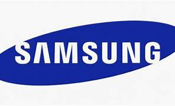

Samsung adalah salah satu penyedia terbesar di dunia teknologi. Dimulai sebagai perusahaan perdagangan ekspor berbagai produk dari Korea Selatan ke Beijing, Cina. Didirikan oleh Lee Byung-chul pada tahun 1938, Samsung secara bertahap berkembang menjadi korporasi multinasional yang sekarang ini.
Samsung Electronics dibentuk pada 1969 di Daegu, Korea Selatan dengan nama Samsung Electric Industries yang pada mulanya memproduksi perangkat elektronik seperti TV, kalkulator, kulkas, pendingin ruangan dan mesin cuci. Pada 1981, perusahaan ini telah memproduksi lebih dari 10 juta TV hitam-putih.
Kata Samsung berarti "tiga bintang" di Korea. Hal ini menjadi nama yang terkait dengan berbagai jenis dunia usaha di Korea Selatan dan di berbagai bagian dunia. Secara internasional, orang mengasosiasikan nama dengan elektronik, teknologi informasi dan pengembangan.
Jauh sebelum Samsung menjelma sebagai raksasa teknologi perusahaan tersebut memulai hidup pada 1938 dengan membuat mie dan penjual makanan laut kering.
Kata "Samsung" yang dalam bahasa Korea berarti "tiga bintang" sengaja dipilih oleh sang pendiri, Lee Byung-chull. Dia bercita-cita membangun perusahaannya menjadi besar dan abadi seperti bintang di langit.
Lalu mengapa tiga bintang, bukan dua atau empat? Sebagaimana dirangkum KompasTekno dari Phone Arena, Selasa (24/2/2015), alasannya adalah angka "3" di Korea bermakna sebagai simbol atau representasi dari sesuatu yang besar dan berkuasa.
Logo perusahaan Samsung pada awalnya pun menyertakan angka "3" ini secara harfiah berupa gambar tiga bintang.
Nama "Samsung" muncul dalam aksara latin pada 1969, ketika perusahaan asal Negeri Ginseng itu berubah nama menjadi Samsung Electronics dan mulai melebarkan sayap ke bidang elektronik dengan memproduksi tape recorder serta TV hitam putih.
Logo terkini dari Samsung -dengan bentuk elips warna biru sedikit miring dan teks berwarna putih di tengahnya- baru ditetapkan sebagai logo perusahaan pada 1993, di bawah inisiatif manajemen baru Lee Kun-hee.
Pada awal tahun ini Samsung Electronic meluncurkan smarpthone flagship terbarunya lebih cepat yakni Galaxy Seri S di mana salah satu tipenya Galaxy S21 telah membantu meningkatkan penjualan Samsung.
Samsung mengalami lonjakan sebesar 45% dalam kuartal pertama 2021 hal ini berkat penjualan yang kuat dari lini smartphone dan home appliance.
Dampak pandemi COVID 19 juga menjadi faktor lonjakan permintaan untuk berbagai produk elektronik konsumen dengan margin tinggi. Ini membantu perusahaan meningkatkan pendapatan.
Permintaan yang begitu tinggi menyebabkan kelangkaan chip dan komponen lainnya secara global. Namun Samsung mencatat penurunan pendapatan untuk divisi chip terutama karena badai yang menghentikan produksi di pabriknya di Amerika Serikat.
Dalam laporan Reuters, mengutip beberapa analis mengklaim bahwa laba operasi untuk raksasa teknologi asal Korea Selatan ini pada kuartal tersebut diperkirakan akan naik menjadi 9,3 triliun won, yaitu sekitar USD 8,2 miliar. Hal tersebut akan menandai tingkat pendapatan operasional tertinggi Samsung untuk kuartal pertama sejak 2018.
Samsung diperkirakan telah memojokkan sekitar 23% pasar global pada kuartal tersebut, berkat peluncuran itu dan harga yang lebih murah dari biasanya untuk perangkat premiumnya. Itu dibandingkan dengan 20% pangsa pasar pada kuartal yang sama tahun lalu dan 16% pangsa pasar pada kuartal sebelumnya ketika Apple merilis iPhone 12.